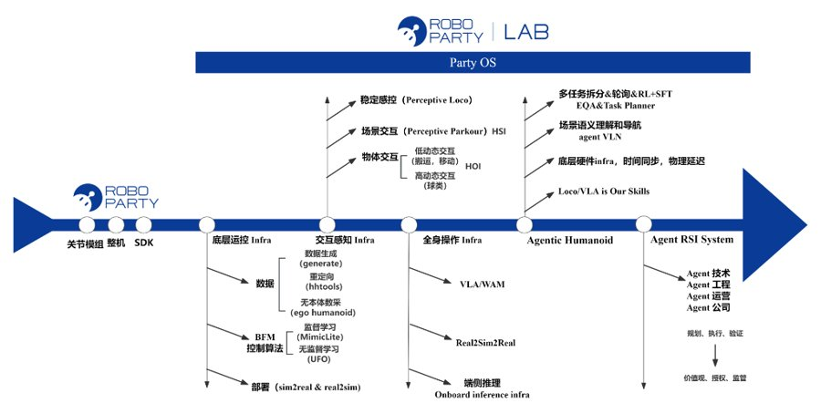
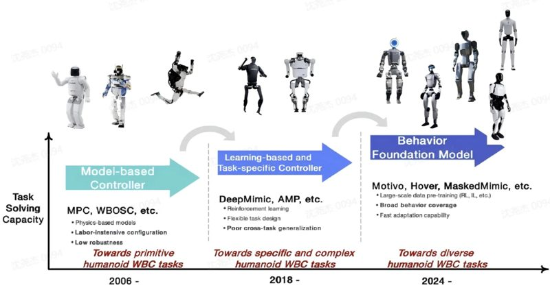
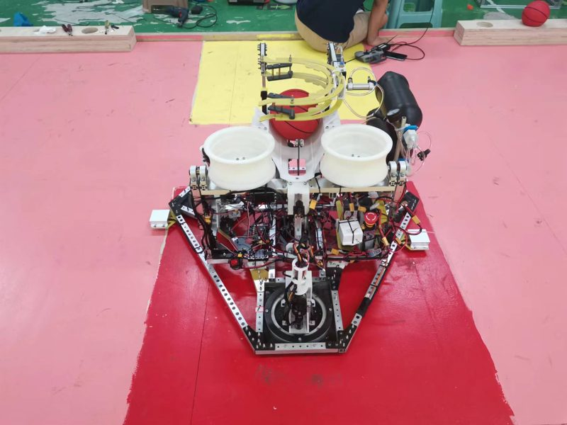
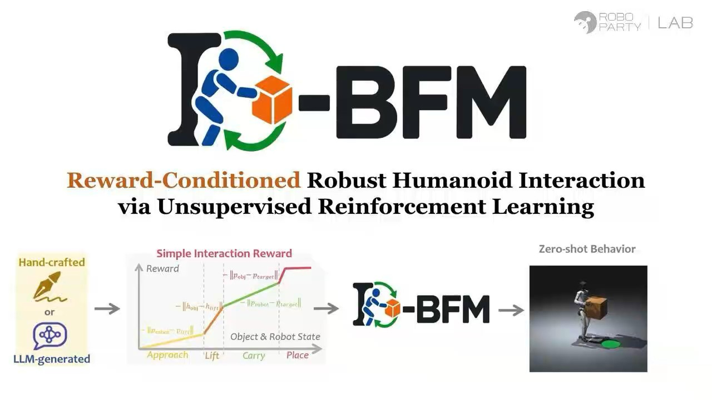
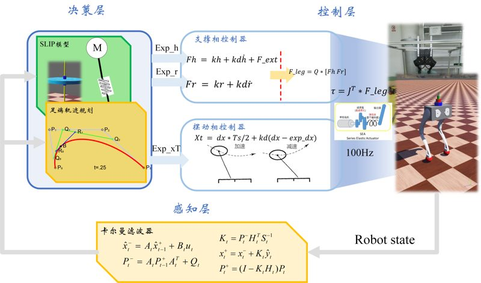
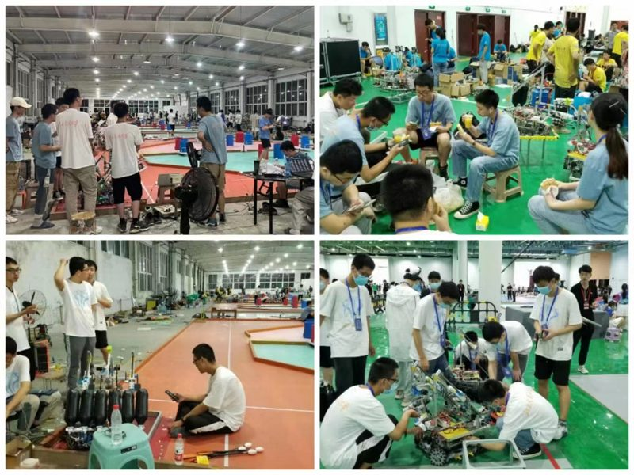

About Me
I lead RoboParty Lab at RoboParty, where we build open-source infrastructure and frontier algorithms for humanoid robots. The lab runs on four ideas: open source, SOTA operation, SOTA algorithms and a SOTA ecosystem.
Before RoboParty, I received my M.S. in Control Engineering from Zhejiang University, advised by Prof. Qiuguo Zhu at the Robotics and Machine Intelligence Lab, where I worked on humanoid model predictive control, imitation learning and reinforcement learning. I received my B.E. from Beijing Jiaotong University, where I captained the Robocon team and built legged robots from scratch.
My goal is to make the full pipeline from human data to real humanoid robots open, reproducible and easy to build on.
Research Interests
- Humanoid whole-body control: behavioral foundation models, unsupervised RL, motion imitation
- Human-to-humanoid data: motion retargeting, trajectory optimization, large-scale motion datasets
- Model-based control: centroidal-dynamics NMPC and whole-body control
- Open-source robotics: tools, systems and knowledge that lower the barrier to humanoid research
News
- [Oct. 2026] P-BFM is released: perceptive behavioral foundation models for terrain-adaptive humanoid control.
- [Oct. 2026] I-BFM is released: the first behavioral foundation model for humanoid–object interaction.
- [Sep. 2026] HHtools 0.1.0 Preview is out, with a desktop app, six built-in humanoids and agent-facing interfaces.
- [Mar. 2026] Graduated from Zhejiang University with an M.S. in Control Engineering.
Open Source



Publications

Project


Education & Experience
Awards
- First-author journal paper: Cooperative Motion Control of Wheel-Legged Robot, Robotica
- Granted Chinese invention patent CN119407787A: whole-body coordinated control of humanoid robots based on a centroidal dynamics model (with Prof. Qiuguo Zhu)
- Beijing Outstanding Graduation Design, 2023
- Special-Class Scholarship, Beijing Jiaotong University
- National-level rating, College Students' Innovation Project (wheel-legged quadruped), project leader
- Robocon National University Robot Competition: second prize (×2), third prize (×1)